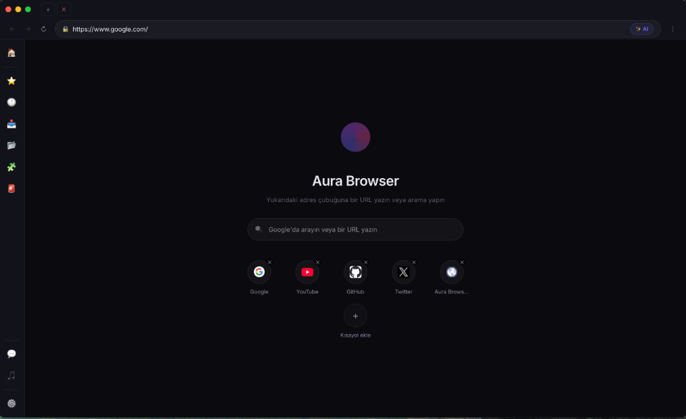
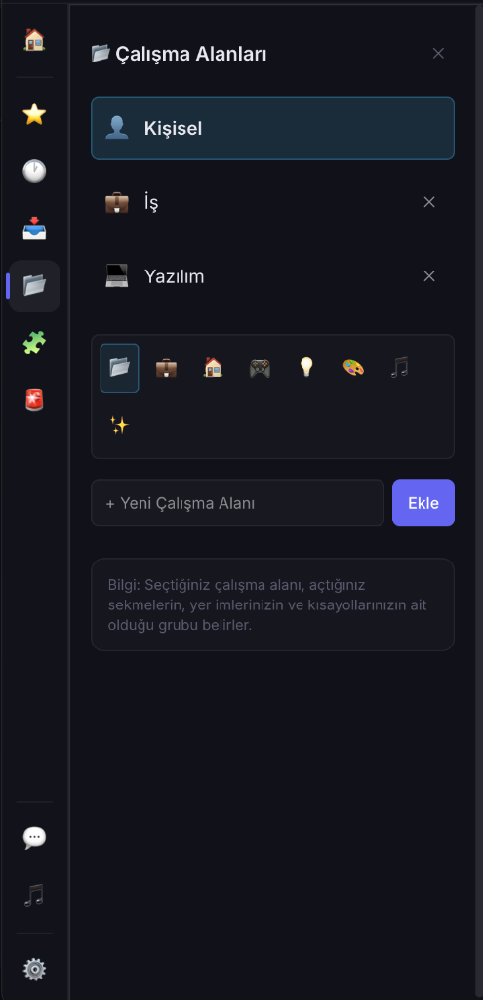

İnterneti Aura İle Yeniden Keşfedin
Hız, gizlilik ve verimlilik tek bir şık arayüzde buluştu. Aura Browser ile çalışma alanlarınızı yönetin, iş ve kişisel dünyanızı birbirinden ayırın.

Modernizmin Yeni Yüzü
Aura, estetikle teknolojinin mükemmel uyumunu temsil eder. Sadece bir tarayıcı değil, dijital dünyadaki yeni kimliğiniz.

Kişiselleştirilmiş Çalışma Alanları
Sekmelerinizi farklı çalışma alanlarına bölerek iş, oyun ve kişisel araştırmalarınızı birbirine karıştırmadan yönetin. Her çalışma alanı kendi yer imleri ve geçmişiyle bağımsız hareket eder.
- ✅ Sınırsız Çalışma Alanı Oluşturma
- ✅ Renk ve Simge Özelleştirme
- ✅ Gruplandırılmış Sekme Yönetimi
Teknolojinin Zirvesi
Anında Kontrol: Panic Sistemi
Beklenmedik durumlarda dijital izlerinizi saniyeler içinde gizleyin.
Tek Tuşla Kurtuluş
Kendi belirlediğiniz bir kısayol tuşu ile tüm tarayıcı pencerelerini anında kapatın.
İzleri Temizle
İsterseniz panik modunu aktif ettiğinizde son 1 saatlik geçmişinizi ve çerezlerinizi otomatik siler.
Hızlı Maskeleme
Pencereleri kapatmak yerine, önceden seçtiğiniz zararsız bir web sitesine (örneğin Wikipedia) anında yönlendirir.
Nasıl Kullanılır?
Sisteminiz için en uygun sürümü indirin.
Uygulamayı 'Uygulamalar' klasörüne taşıyın.
Karantina engelini kaldırmak için 'Fix_Aura.command' dosyasını çalıştırın.
Keyfini çıkarın ve interneti özgürce keşfedin!
Aura Browser'ı Bugün Edinin
macOS
Apple Silicon (M1/M2/M3)
macOS için İndir Kurulum sonrası `Fix_Aura.command` dosyasını çalıştırmayı unutmayın.